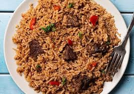

PILAU

This is a Kenyan dish favourite for lunch for most people
It is made of rice, meat and other ingredients
Ingredients
- Rice
- Onions
- Meat 1kg
- Tomatoes
- Salt
- oil
Steps
- Wash the meat and boil for 30 minutes
- Add salt
- Wash the onions and tomatoes then cut them into slices
- Pour oil in a sufuria and add the ingredients
- Boil rice till cook
- Add the boiled meat into the mixture
- Let it cook for 30 minutes
- Ready to be served, best for lunch